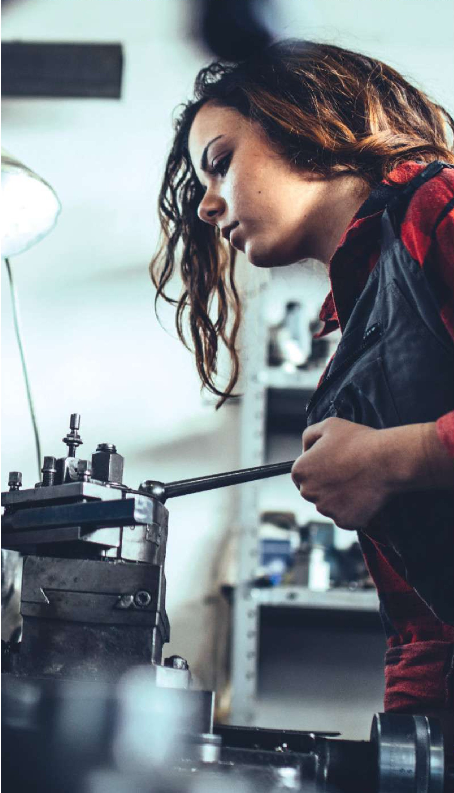
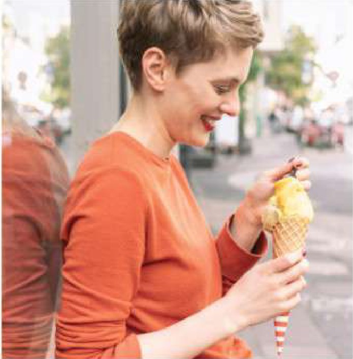
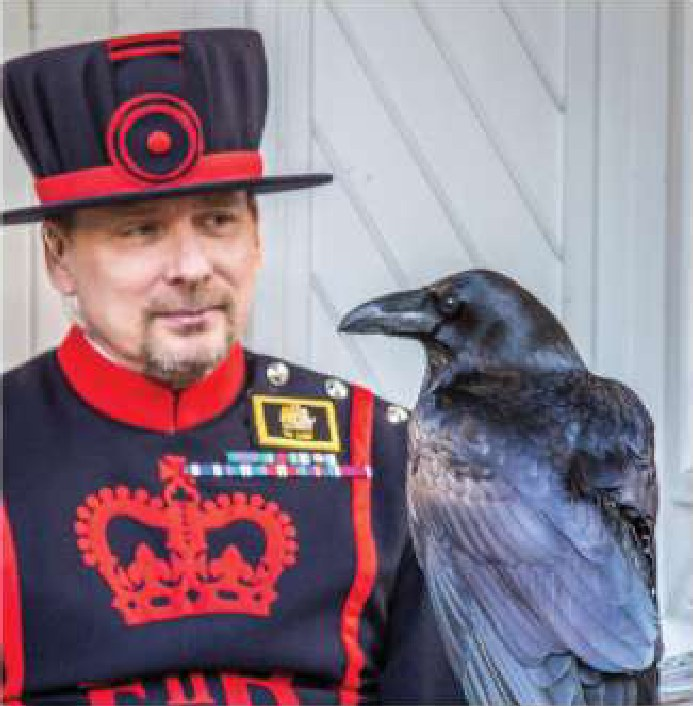
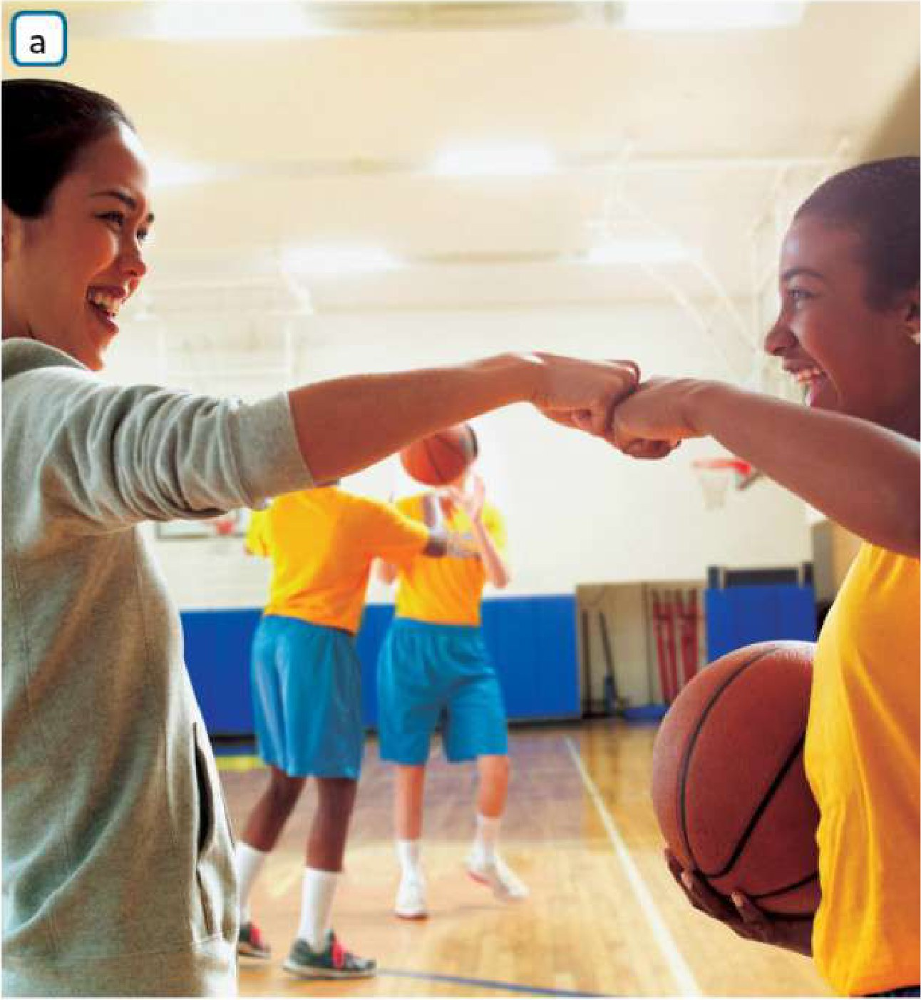
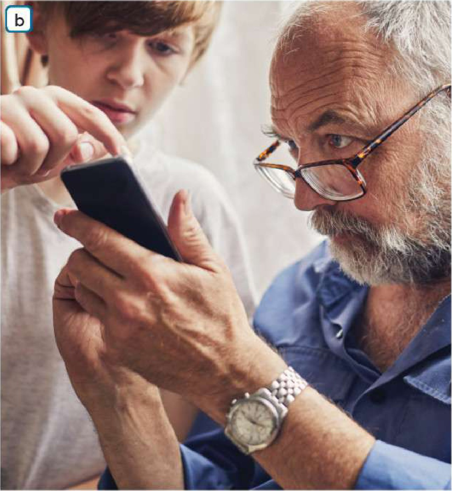

Vocabulary in context
1 Read the sentences and check the words in bold in your dictionary if necessary.
- 1They work outdoors.
- 2They work with the public.
- 3They do paperwork, e.g. producing reports, articles and documents or writing letters.
- 4They look after and work with children.
- 5They do manual work.
- 6Teamwork is important in their job.
- 7They work in an office, with figures or with computers.
- 8They earn a high salary.
- 9They often work overtime.
- 10They work in retail or finance.
2 SPEAKINGFind two jobs for each sentence in 1.
1 construction worker, firefighter
3 SPEAKINGCan you think of one more job (not from the list in 2) for each sentence in 1?
4a Complete the text with some of these words.
4b Listen and check your answers.
5 SPEAKINGAsk and answer the questions.
- 1Which of the things in 1 would you like in your future job? Which would you not like?
I’d like to work in a team and earn a high salary. I wouldn’t like to work overtime or do paperwork all day. - 2Which two jobs in 2 would you be interested in doing in the future? Which two are you definitely not interested in doing?
I’d be interested in being a vet and a photographer. I’m definitely not interested in being a lawyer or an economist. - 3Is there another job, not in 2, that you think you would like to do? If so, which?
Yes, I think I’d like to be a pilot because I love travelling. - 4Which qualities in 4a can you use to describe yourself? Justify your answer.
I think I’m creative and sociable. For example, I love making videos with my friends, and I always talk to new classmates.
Compound adjectives
1 Hard-working is a compound adjective made by joining two words. The two words are usually connected with a hyphen (-).
SPEAKINGJoin words in A with words in B to make compound adjectives. You can use some of the words in A more than once.
blue/brown/green
easy
full/part
good
long/short
right/left
well
-going
-paid
-eyed
-handed
-looking
-behaved
-known
-haired
2a Listen and check your answers in 1. Do you have all the words?
3 Read the text. Complete the compound adjectives in the text using these words.
4 SPEAKINGWhich of the compound adjectives in 1 and 3 can you use to describe …
- a)Lisa from BLACKPINK?
Lisa is well-known, well-paid and hard-working. - b)another famous person?
Tony Jaa is well-known and hard-working. Tony Jaa is also very fit. - c)yourself?
I’m easy-going and hard-working. I’m also brown-eyed and short-haired. - d)your friend?
My friend is easy-going and well-behaved. My friend is also long-haired and left-handed. - e)your choice
My choice is my English teacher. My English teacher is easy-going and hard-working.
Great Thinkers
1 SPEAKINGLook at the options. With your partner, say which you prefer and why.
- 1Working indoors/Working outdoors
I prefer working outdoors because I like fresh air and I don’t like sitting in an office. - 2Working from 9 to 5/Having flexible working hours
I prefer having flexible working hours because I can plan my day. - 3Working individually/Working in a team
I prefer working in a team because it’s more fun and we can share ideas. - 4Working with technology/Working with no technology
I prefer working with technology because it makes many jobs easier. - 5A well-paid job/A satisfying job, the salary is not important
I prefer a satisfying job. I’d rather enjoy my work than earn a lot of money.
Narrator: Meet Jess Wheeler. She’s 25. She’s an illustrator, and she lives right here, next to a river, in Suffolk. She sleeps in one tent and lives and works in the other. It’s very different from her old life in London! With little space indoors, she has to live with only the things she really needs. Eighteen-year-old Zeki Basan also lives with very little. The Highlands of Scotland are his playground and his office. He teaches survival courses where he shows we don’t need as much as we think. He can live for days, weeks, even months with just the things he carries in his backpack. This too is a very different life from the nine to five of working in the city. Take food, for example. He doesn’t have to spend any money because he eats what he catches and finds. And he cooks it by making fire in the old traditional way. Back by the river, a new day is beginning for Jess. After preparing and eating a simple breakfast, it’s time for work. Without the distractions of the Internet or other people, she has more time to be creative. She draws illustrations for magazines, menus and invitations, plus animal portraits. Like Jess, Zeki is happy to be without the Internet or screens. He believes people are addicted to them. But is that what life is really about? You mustn’t forget what is really beautiful, what you really should enjoy.
In fact, Zeki is happier without modern gadgets and without modern materials. He uses the bark from trees and the skins of animals to produce soft, natural leather. And with this leather, he makes different types of objects and products and then he sells them. So, live and work in the city or in the great outdoors like Zeki and Jess?
2 VIDEOWatch a video about a young man and woman. Which of the options in 1 have they both chosen?
- 1 Working outdoors▶ 0:42
- 2 Having flexible working hours▶ 1:04
- 3 Working individually▶ 1:31
- 4 Working with no technology▶ 1:48
- 5 A satisfying job, the salary is not important▶ 1:54
3 VIDEOWatch the video again. Are the statements about Jess Wheeler (J), Zeki Basan (Z) or both (B)?
- 1They’re 25 years old. J▶ 0:10
- 2They used to live in London. J▶ 0:23
- 3They only need a few objects to live. B▶ 0:29
- 4They sometimes work with others. Z▶ 0:47
- 5Their eating habits are quite primitive and simple. Z▶ 1:07
- 6They don’t mind living without modern gadgets. B▶ 1:48
- 7They make money by creating things. B▶ 2:21
4 Work with a partner. What do you think about Jess and Zeki’s lifestyles? What do you like and what you don’t like about them? Present it to the class.

5 Look at the statements below about what can be important in a job. Give each factor a mark from 0 (completely disagree) to 5 (completely agree).
6 SPEAKINGCompare your answers in 5. Are they similar?
7 Suggest jobs for your partner according to the marks they gave to the statements in 5.
1 SPEAKINGLook at the photos. What do you think Louise and Christopher have to do in their jobs? Make a list of good and bad things about each job.


2 Listen to two teenagers discussing the two jobs. Do they talk about any of your ideas in 1? If so, which?
Layla: Wow! Harry, have you seen this? I didn’t know this job really existed!
Harry: Which job?
Layla: Being a professional ice cream taster! Can you imagine?
Harry: Yes, Layla, I can! I can imagine that if I ate ice cream every day, I’d put on weight really fast! Actually, I wonder how much ice cream you have to eat.
Layla: Err … Wait, it says it here … Louise Bamber, she’s in charge of tasting ice cream for a big UK supermarket … She says that sometimes she tastes up to 250 ice creams a day!
Harry: Really? I like having an ice cream or two in the summer but if I did that job I’d get tired of it. Unless you really loved ice cream, you wouldn’t want to eat it all through the winter.
Layla: But wait! You don’t actually eat all that ice cream, you just taste it. It’s not the same. Nobody could eat all that sugar! And you do other things too. For example, Louise travels a lot. She’s always looking for new flavours and ideas and that’s the part that sounds the most interesting to me. If I had that job, I’d really enjoy inventing new flavours. Tomato ketchup or blue cheese!
Harry: Yuck … Seriously, though, I reckon if you did that job, you’d need to visit the dentist regularly!
Layla: True! But what about you, what would your dream job be?
Harry: I’ve just finished a great book called Ravenmaster. The man who looks after the ravens at the Tower of London wrote it. His name is Christopher Skaife. That’s probably my dream job!
Layla: Wait, isn’t there a legend about the ravens? If the six ravens at the Tower of London fly away, the Kingdom and the Tower of London will fall?
Harry: Yeah, that’s why it’s so special. You’re responsible for the future of the country!
Layla: Hmm. So, what qualifications do you need for a job like that?
Harry: You must have at least 22 years of military experience. I suppose you have to like birds too … What I’d love about the job is that you live inside the Tower of London!
Layla: Pff! I would be really frightened if I lived inside the Tower of London! Didn’t prisoners die there?
Harry: A long time ago.
Layla: Actually, I find ravens quite scary too.
Harry: Christopher says the birds are usually friendly with visitors but it isn’t a good idea to get too close to them. He has lots of marks on his arms where the ravens have attacked him. He also says visitors should be careful because the ravens sometimes steal things, especially crisps and biscuits!
Layla: Is he responsible for feeding the ravens?
Harry: Yes, he has to give them chicken … and mice … and rats!
Layla: Oh!
Harry: Yes, but at least he doesn’t have to catch them!
Layla: If I were you, I’d choose a different dream job … For example, one where there’s ice cream, not mice or rats!
Yes. Harry says he would put on weight and get tired of eating ice cream.▶ 0:22
Layla says Louise travels a lot and would enjoy inventing new flavours.▶ 1:08
Harry would love to live inside the Tower of London, but Layla thinks she would be frightened there.▶ 2:20
The ravens attack the ravenmaster and steal food from visitors, and he has to feed them chicken, mice and rats.▶ 2:45
3 Listen again and choose the best answers.
Layla: Wow! Harry, have you seen this? I didn’t know this job really existed!
Harry: Which job?
Layla: Being a professional ice cream taster! Can you imagine?
Harry: Yes, Layla, I can! I can imagine that if I ate ice cream every day, I’d put on weight really fast! Actually, I wonder how much ice cream you have to eat.
Layla: Err … Wait, it says it here … Louise Bamber, she’s in charge of tasting ice cream for a big UK supermarket … She says that sometimes she tastes up to 250 ice creams a day!
Harry: Really? I like having an ice cream or two in the summer but if I did that job I’d get tired of it. Unless you really loved ice cream, you wouldn’t want to eat it all through the winter.
Layla: But wait! You don’t actually eat all that ice cream, you just taste it. It’s not the same. Nobody could eat all that sugar! And you do other things too. For example, Louise travels a lot. She’s always looking for new flavours and ideas and that’s the part that sounds the most interesting to me. If I had that job, I’d really enjoy inventing new flavours. Tomato ketchup or blue cheese!
Harry: Yuck … Seriously, though, I reckon if you did that job, you’d need to visit the dentist regularly!
Layla: True! But what about you, what would your dream job be?
Harry: I’ve just finished a great book called Ravenmaster. The man who looks after the ravens at the Tower of London wrote it. His name is Christopher Skaife. That’s probably my dream job!
Layla: Wait, isn’t there a legend about the ravens? If the six ravens at the Tower of London fly away, the Kingdom and the Tower of London will fall?
Harry: Yeah, that’s why it’s so special. You’re responsible for the future of the country!
Layla: Hmm. So, what qualifications do you need for a job like that?
Harry: You must have at least 22 years of military experience. I suppose you have to like birds too … What I’d love about the job is that you live inside the Tower of London!
Layla: Pff! I would be really frightened if I lived inside the Tower of London! Didn’t prisoners die there?
Harry: A long time ago.
Layla: Actually, I find ravens quite scary too.
Harry: Christopher says the birds are usually friendly with visitors but it isn’t a good idea to get too close to them. He has lots of marks on his arms where the ravens have attacked him. He also says visitors should be careful because the ravens sometimes steal things, especially crisps and biscuits!
Layla: Is he responsible for feeding the ravens?
Harry: Yes, he has to give them chicken … and mice … and rats!
Layla: Oh!
Harry: Yes, but at least he doesn’t have to catch them!
Layla: If I were you, I’d choose a different dream job … For example, one where there’s ice cream, not mice or rats!
- Harry isn’t very enthusiastic about being an ice cream taster because …▶ 0:46
a he doesn’t enjoy eating ice cream.
b he thinks ice cream is bad for you.
c he doesn’t want to eat ice cream all year. - Layla likes Louise’s job because …▶ 1:08
a she enjoys travelling to new places.
b she likes the creative side of the job.
c she enjoys eating all types of ice cream. - Harry thinks being a ravenmaster is an important job because …▶ 2:01
a of a traditional story about the ravens.
b the ravenmaster is in charge of the Tower of London.
c ravenmasters also write books and stories. - The ravenmaster …▶ 2:13
a has to have worked in the army.
b must have worked with birds for more than 20 years.
c needs to travel to the Tower of London every day. - Christopher Skaife thinks that visitors should …▶ 2:39
a only give the birds food that they usually eat.
b be very careful because the birds attack.
c stay at a short distance from the birds, just in case.
4 In your opinion, how useful or important are these two jobs? What factors make a job useful or important?
Use ideas from the listening and other information to justify your opinion. Then share your ideas.
Giving detailed personal information


1 SPEAKINGLook at this list of qualities and skills. What qualities or skills do you think you need for the activities in the photos? Give reasons and examples to justify your answer.
- 1Being friendly and caring
- 2Having good communication skills
- 3Being good at motivating others
- 4Being good at organising others
- 5ICT skills
- 6Leadership
- 7Numeracy skills (maths and money)
- 8Patience
- 9Problem solving
- 10Ability to work in a team
2 Listen to a part of an interview with Amelia, the girl in photo a and answer the questions.
Interviewer: What do you like doing in your free time?
Amelia: Err … I love playing basketball and I’ve always played in the school team. We’re in the Dynamik National Schools League. This year the school asked me to help train our youngest girls’ team. The girls are 10 and 11.
Interviewer: What skills have you learned from that? And what qualities do you think you have that help you?
Amelia: Well, I think I’ve learned to motivate others. For example, we only had seven girls in the team when I started training them. Now we have a full team of 12. That’s because they enjoy playing and training more this year so they asked their friends to join the team. Another thing to say is that I think it’s important that I’m friendly and caring. For instance, the team can see that I have a good relationship with them and that means they try harder for me. Also, to train a team, you have to be good at organising people, and I think I’m good at that. Let me give you an example … Last year the team didn’t know exactly when they were going to train. I’ve made a timetable, you see, so they know exactly what day and time we have training sessions and matches. That really helps!
- 1What three questions do they ask her?▶ 0:07
What do you like doing in your free time? What skills have you learned from that? And what qualities do you think you have that help you? - 2What is Amelia doing this year?▶ 0:18
She is playing in the school basketball team and training the school’s youngest girls’ team. - 3Does she give just one answer to the second question?▶ 0:33
Yes – she’s learned to motivate others. - 4Does she just give one answer to the third question?▶ 0:52
No, she gives two: she’s friendly and caring and she’s good at organising people. - 5Does she mention any of your ideas in 1? Which?▶ 1:09
3 Listen again. What examples does Amelia give to justify the qualities and skills she mentions in her answer? Take notes with important words that help you to remember your answer.
Interviewer: What do you like doing in your free time?
Amelia: Err … I love playing basketball and I’ve always played in the school team. We’re in the Dynamik National Schools League. This year the school asked me to help train our youngest girls’ team. The girls are 10 and 11.
Interviewer: What skills have you learned from that? And what qualities do you think you have that help you?
Amelia: Well, I think I’ve learned to motivate others. For example, we only had seven girls in the team when I started training them. Now we have a full team of 12. That’s because they enjoy playing and training more this year so they asked their friends to join the team. Another thing to say is that I think it’s important that I’m friendly and caring. For instance, the team can see that I have a good relationship with them and that means they try harder for me. Also, to train a team, you have to be good at organising people, and I think I’m good at that. Let me give you an example … Last year the team didn’t know exactly when they were going to train. I’ve made a timetable, you see, so they know exactly what day and time we have training sessions and matches. That really helps!
Motivating others▶ 0:36
just seven girls in the team at beginning, now 12
Friendly and caring▶ 0:57
good relationship means team try harder for her
Good at organising▶ 1:14
team didn’t know when to train, so she made a timetable
4 Look at the Speaking bank. Which expression did Amelia not use? Listen again if necessary.
Interviewer: What do you like doing in your free time?
Amelia: Err … I love playing basketball and I’ve always played in the school team. We’re in the Dynamik National Schools League. This year the school asked me to help train our youngest girls’ team. The girls are 10 and 11.
Interviewer: What skills have you learned from that? And what qualities do you think you have that help you?
Amelia: Well, I think I’ve learned to motivate others. For example, we only had seven girls in the team when I started training them. Now we have a full team of 12. That’s because they enjoy playing and training more this year so they asked their friends to join the team. Another thing to say is that I think it’s important that I’m friendly and caring. For instance, the team can see that I have a good relationship with them and that means they try harder for me. Also, to train a team, you have to be good at organising people, and I think I’m good at that. Let me give you an example … Last year the team didn’t know exactly when they were going to train. I’ve made a timetable, you see, so they know exactly what day and time we have training sessions and matches. That really helps!
- For example
- For instance
- Let me give you an example
- A good example is …← Amelia did not use this expression.
- Also …
- Another thing to say is …
5 Use the same three questions that the Amelia answered and your ideas in 1 to create an interview with the boy in the picture b. Also, use some expressions from the Speaking Bank.
- 1What do you like doing in your free time?
I like helping people with technology. I often show my grandfather how to use his phone. - 2What skills have you learned from that?
I think I’ve learned to be patient. For example, last week I explained how to send photos three times and I didn’t get angry. - 3And what qualities do you think you have that help you?
I think I’m friendly and good at explaining things. Another thing to say is that I have good ICT skills. For instance, I fixed the Wi-Fi at home.
6 Think about one of your favourite free-time activities (hobbies, interests, sports, etc.). Which of the skills and qualities from the list in 1 has it helped you to develop (you can also use skills and qualities that are not in Exercise 1)? Make a note of three skills or qualities and examples to justify your answer.
Activity: playing football.
Ability to work in a team – I pass the ball and listen to my teammates in every match.
Leadership – I’m the captain, so I organise the training and talk to the coach.
Patience – I help the younger players and I wait until they understand the exercise.